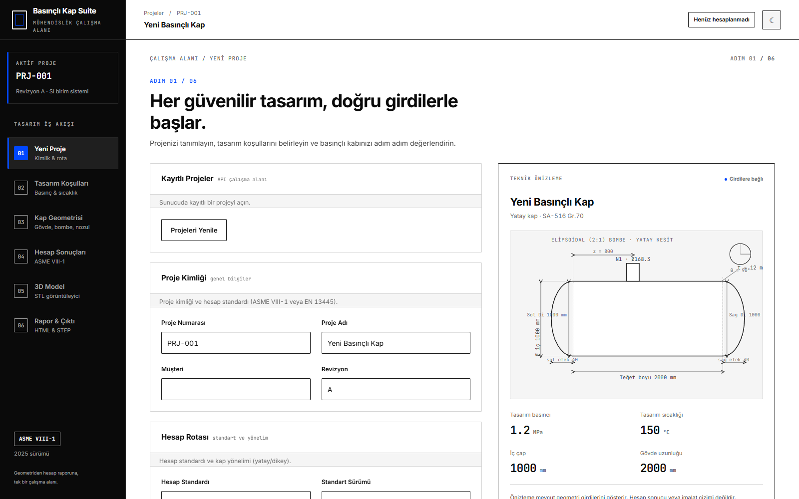
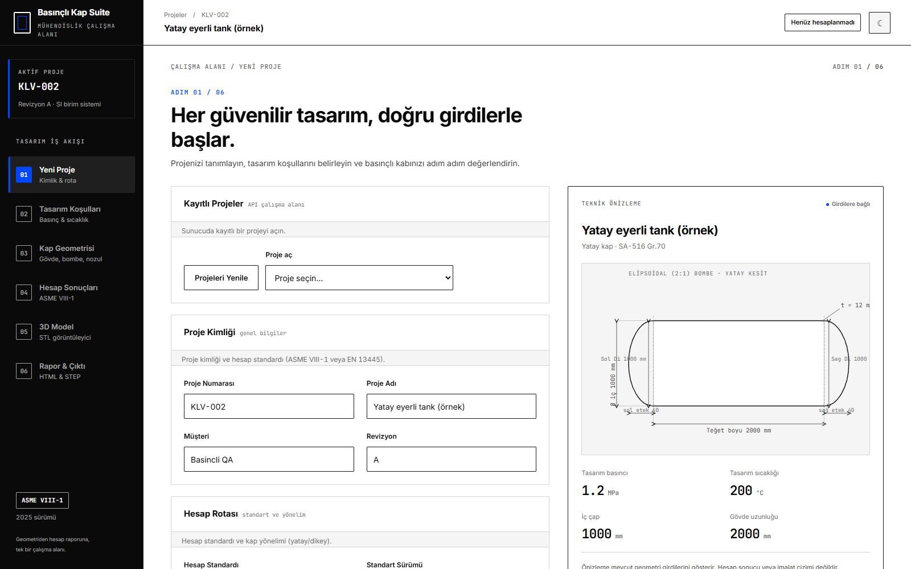
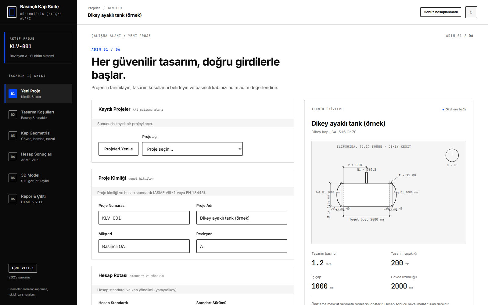
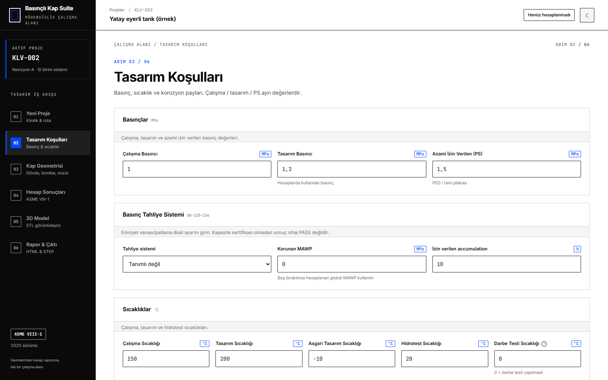
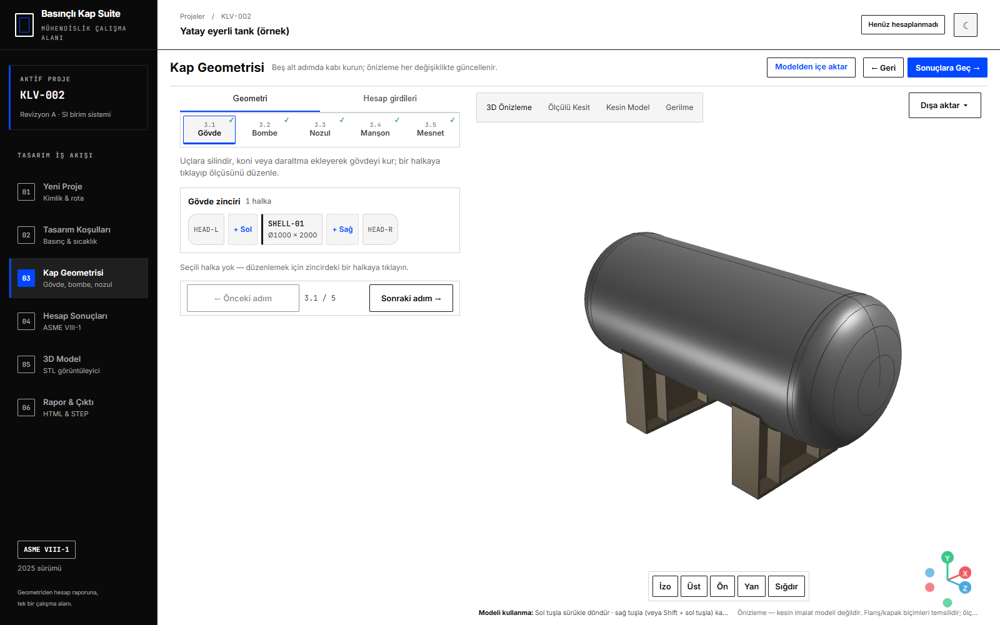
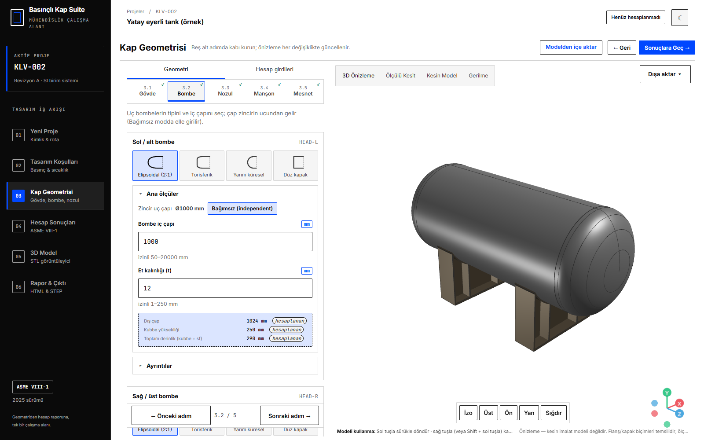
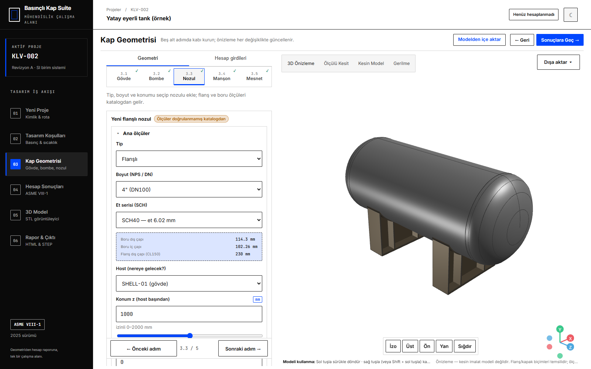
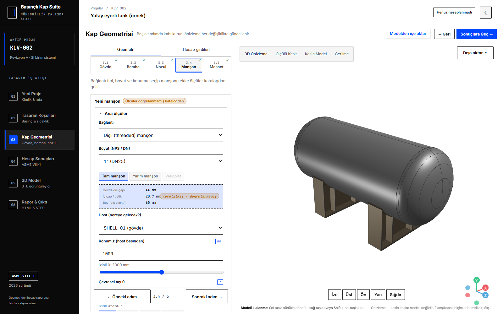
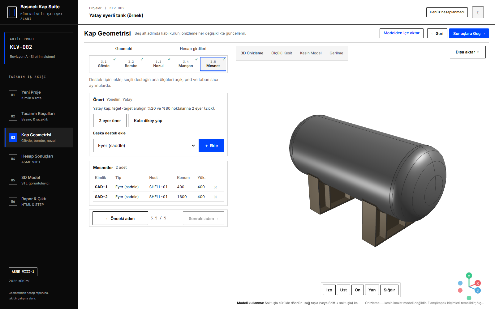

ASME BPVC Section VIII Division 1 ve EN 13445-3 Standartlarına Göre Ön Boyutlandırma, Mekanik Mukavemet, Nozul Takviye, Destek Doğrulama ve 3D İmalat Modeli Oluşturma Rehberi.

Vessela (app.zeyslabs-vessela.com), endüstriyel basınçlı kapların ön tasarım, mekanik mukavemet hesaplama, standart denetimi ve 3D imalat verisi üretim süreçlerini modern web tarayıcıları üzerinden sıfır kurulumla uçtan uca yönetmek için geliştirilmiş profesyonel bir mühendislik platformudur.
Geleneksel basınçlı kap tasarım süreçleri, birbirinden kopuk üç katmanda yürütülür: tablolardan yapılan el hesapları veya karmaşık ticari formül yazılımları (PV Elite vb.), CAD çizim ortamları (SolidWorks, Inventor) ve sonlu elemanlar doğrulama laboratuvarları. Vessela, bu kopukluğu ortadan kaldırmak için parametrik geometri modelleme ile kodlu mukavemet hesaplarını tek bir reaktif çalışma alanında birleştirir.
Platform Kimin İçindir?
Vessela'nın tasarım ve hesaplama sınırları docs/limitations.md ve docs/calculation-coverage.md teknik kayıtlarında katı kurallarla tanımlanmıştır. Sistem sahte güven hissi vermemek üzerine kurgulanmıştır:
BLOCKED_CODE_DATA veya BLOCKED_MISSING_INPUT durumuyla bloklar.
| Kategori | Vessela V1 Kapsamında Olanlar | V1 Kapsam Dışı / İleriki Sürümler |
|---|---|---|
| Ekipman Tipi | Tek basınç odalı, metalik, sabit (yatay veya dikey) yerleştirilmiş kaplar. | Ceketli (jacketed) kaplar, çok odalı yapılar, eşanjör tüp demetleri, taşınabilir gaz tüpleri (ADR), doğrudan ateşle temas eden kazanlar. |
| Hesap Rotaları | ASME Section VIII Div. 1 (2025 Edition) ana rota; EN 13445-3:2021+A1:2023 dar kapsamlı ön kontrol rotası. | Design by Analysis (DBA / EN 13445 Ek B/C), ASME Div. 2, TS 3362 (formülsüz katsayı standardı). |
| Yük Durumları | İç basınç, statik sıvı kafası düzeltmesi, dış basınç (kullanıcı A/B girdisiyle), destek moment zarfları. | Dinamik rüzgâr/deprem modal analizi, nozula gelen boru hat reaksiyonları, dalgalanma (surge) yükleri, termal şok. |
| Malzeme Davranışı | Elastik bölge, kullanıcı beyanlı izin verilen gerilme ($S$, $f$), akma ve çekme dayanımları. | Sünme (creep) bölgesi, yüksek sıcaklık relaksasyonu, kriyojenik faz dönüşümleri, kompozit (Type III/IV) malzemeler. |
| FEA (Sonlu Elemanlar) | Arayüzde görsel membran gerilme haritası (Lamé formülleri). | CalculiX / Code_Aster doğrulaması henüz üretim hesap hattına bağlı değildir; offline doğrulama aracıdır. |
Vessela, tasarımcının zihnindeki mantıksal mühendislik sırasını yansıtan 6 sıralı adımdan oluşur (kaynak: apps/web-ui/src/App.tsx):
| Adım No | Adım Başlığı | Alt Başlık | İşlev ve Kapsam |
|---|---|---|---|
| 01 | Yeni Proje | Kimlik & Rota | Proje numarası, müşteri, revizyon tanımları; tasarım standardı seçimi (ASME VIII-1 / EN 13445) ve kap oryantasyonu (yatay/dikey). |
| 02 | Tasarım Koşulları | Basınç & Sıcaklık | Çalışma/tasarım/PS basınçları, sıcaklıklar, MDMT, hidrotest şartları, korozyon payları, statik sıvı yoğunluğu ve dış basınç koşulları. |
| 03 | Kap Geometrisi | Gövde, Bombe, Nozul | 5 alt adımlı sihirbaz: (3.1) Gövde zinciri, (3.2) Bombeler, (3.3) Flanşlı nozullar, (3.4) Manşonlar, (3.5) Mesnetler. Ek sekmede malzeme, kaynak, flanş, WRC ve BOM girdileri. |
| 04 | Hesap Sonuçları | Standart Mukavemet | Gövde/bombe et kalınlığı, MAWP, hidrotest basıncı, nozul takviyesi, dış basınç, destek gerilmesi ve çakışma kontrolleri. Durum rozetleri ve ara değerler. |
| 05 | 3D Model | STL & Parametrik Görünüm | Tarayıcı içinde WebGL/Three.js tabanlı döndürülebilir 3D model, kesit (section) görünümü ve kabın kesin dış/iç ölçülerinin incelenmesi. |
| 06 | Rapor & Çıktı | HTML, PDF, STEP, BOM | 23 bölümlük tam denetlenebilir HTML hesap raporu, tescilli PDF baskı formatı, SolidWorks/FreeCAD uyumlu 3B STEP modeli, sac açınımı ve BOM CSV çıktısı. |
computeIssues(project) fonksiyonunu çalıştırır. Eğer geometride bloke edici bir hata varsa (örneğin gövde çapının sıfır olması, koni uçlarının uyumsuzluğu veya nozulun kap cidarını aşması), sistem kullanıcıyı uyarır ve Adım 03'te kalmaya zorlar. Bloke etmeyen geometrik uyarılarda ise mühendis onayı talep edilir.
Bu bölümde, Vessela arayüzündeki her bir adımın ekran görüntüleri ve bu ekranlarda yer alan istisnasız her bir giriş alanının teknik açıklaması, birimi ve hesap motorundaki rolü sunulmuştur.
Projenin idari kimliğinin oluşturulduğu, kullanılacak tasarım standardının ve kabın uzaydaki montaj yöneliminin (yatay/dikey) belirlendiği ilk adımdır.


| Alan Adı (UI Etiketi) | Birim | Kod Alanı & Tipi | Anlamı ve Neden Gereklidir? |
|---|---|---|---|
| Proje Numarası | — | project_number (string) |
İmalat dosyasında, teknik çizimlerde ve rapor üst bilgisinde yer alacak benzersiz proje takip kodu (ör. PRJ-001). |
| Proje Adı | — | project_name (string) |
Ekipmanın açıklayıcı adı (ör. Yatay Eyerli Hava Tankı, Dikey Depolama Reaktörü). |
| Müşteri | — | customer (string) |
Ekipmanın üretildiği tesis, müşteri veya ana yüklenici ticari unvanı. Rapor kapağı için zorunludur. |
| Revizyon | — | revision (string) |
Mühendislik değişiklik seviyesi (ör. Rev 0, Rev A). Her hesaplama çalıştırmasında izlenebilirlik sağlar. |
| Hesap Standardı | — | calculation_code (select) |
Hesap motorunu belirler: ASME VIII-1 veya EN 13445. Formül rotalarını, gerilme sınırlarını ve güvenlik katsayılarını kökten değiştirir. |
| Standart Sürümü | — | code_edition (string) |
Standart baskı yılı (ör. 2025 Edition / 2021+A1:2023). Uygunluk değerlendirmesi için raporda belgelenir. |
| Kap Yönelimi | — | orientation (select) |
horizontal (Yatay) veya vertical (Dikey). Mesnet türlerini (eyer vs ayak/etek), statik sıvı seviyesi davranışını ve rüzgâr/moment kollarını belirler. |
Kabın ömrü boyunca maruz kalacağı basınç, vakum, sıcaklık, korozyon ve akışkan özelliklerinin tanımlandığı adımdır. Mukavemet hesaplarının temel pay ve payda değişkenleri burada girilir.

| Alan Adı (UI Etiketi) | Birim | Kod Alanı & Tipi | Anlamı ve Neden Gereklidir? |
|---|---|---|---|
| Çalışma Basıncı | MPa | operating_pressure (float) |
Normal operasyonel proses basıncı. Tasarım basıncının altında olmalıdır (tutarlılık kontrolü yapılır). |
| Tasarım Basıncı (P / Pd) | MPa | design_pressure (float) |
Tüm cidar kalınlığı hesaplarında doğrudan payda çarpanı olan temel basınç değeri. Emniyet marjını içerir. |
| Azami İzin Verilen (PS) | MPa | maximum_allowable_pressure_ps |
Avrupa Basınçlı Ekipmanlar Direktifi (PED 2014/68/EU) ve isim plakası için tanımlı maksimum sınır. |
| Tahliye Sistemi | — | pressure_relief.enabled |
Kap üzerinde emniyet vanası veya patlama diski olup olmadığını belirtir (UG-125/136 uyumluluğu). |
| Korunan MAWP | MPa | protected_mawp_mpa |
Tahliye sisteminin referans aldığı sınır. Boşsa hesaplanan global MAWP otomatik atanır. |
| İzin Verilen Accumulation | % | accumulation_limit_percent |
Basınç tahliyesi esnasındaki aşırı basınç yüzdesi (varsayılan ASME için %10). |
| Cihaz Tipi & Set Basıncı | — / MPa | device_type, set_pressure_mpa |
Emniyet vanası açma basıncı veya patlama diski patlama basıncı. Korunan MAWP'yi aşamaz. |
| Çalışma Sıcaklığı | °C | operating_temperature |
Prosesin normal çalışma sıcaklığı. |
| Tasarım Sıcaklığı | °C | design_temperature |
Malzemenin izin verilen gerilmesinin ($S$ / $f$) okunduğu sıcaklık. Kalınlığı belirleyen kritik parametre. |
| Asgari Tasarım Sıcaklığı (MDMT) | °C | minimum_design_temperature |
Gevrek kırılma riski taşımayan en düşük çalışma sıcaklığı. UCS-66 darbe muafiyeti değerlendirmesinde kullanılır. |
| Hidrotest Sıcaklığı | °C | hydrotest_temperature |
Basınç testinin yapılacağı ortam sıcaklığı (genellikle 20 °C). $S_{test}/S_{design}$ gerilme oranı için zorunludur. |
| Darbe Testi Sıcaklığı | °C | impact_test_temperature_C |
Charpy darbe deneyinin yapıldığı sıcaklık (varsa). UCS-66 eğri değerlendirmesine ek girdi sağlar. |
| Dış Basınç | MPa | external_pressure |
Kabın dışından etki eden basınç (ör. ceket basıncı veya atmosferik su altı). 0 ise UG-28 kontrolü yapılmaz. |
| Vakum Koşulu | — | vacuum_condition (bool) |
Tam vakum riski varsa "Var" seçilir; sistem otomatik olarak 0.1013 MPa dış basınç kararlılık denetimi yapar. |
| Akışkan Yoğunluğu | kg/m³ | fluid_density_kg_m3 |
İçerideki sıvının yoğunluğu (su için 1000). Sıvı yüksekliğiyle çarpılarak alt cidarlara statik kafa basıncı ekler. |
| Sıvı Seviyesi | mm | liquid_level_mm |
Kabın tabanından sıvı yüzeyine olan kot. Statik basınç formülünde ($P_{statik} = \rho \cdot g \cdot h$) yükseklik girdisidir. |
| İç Korozyon Payı (C / C_int) | mm | corrosion_allowance_internal |
İç yüzeyde proses boyunca kaybolacağı varsayılan metal kalınlığı. İç çapı büyütür, et kalınlığına eklenir. |
| Dış Korozyon Payı (C_ext) | mm | corrosion_allowance_external |
Dış çevre koşulları nedeniyle kaybolacak cidar payı. |
Vessela'nın en gelişmiş bölümü olan Adım 03, beş alt adımlı interaktif bir geometri sihirbazı (Geometry Wizard) ve hemen yanında canlı 3D/2D önizleme paneli içerir.
Kap gövdesini oluşturan silindirik halkalar, konik geçişler ve kademeli çap değişimleri burada kurulur.

| Alan Adı (UI Etiketi) | Birim | Kod Alanı & Tipi | Anlamı ve Neden Gereklidir? |
|---|---|---|---|
| İç Çap (ID) | mm | shell.inside_diameter |
Silindirin korozyonsuz iç çapı. Cidar gerilmesini doğrudan belirleyen temel boyut. |
| Et Kalınlığı (t / nominal) | mm | shell.nominal_thickness |
Seçilen sac kalınlığı. Hesaplanan gerekli kalınlıkla ($t_{req}$) kıyaslanarak mukavemet onaylanır. |
| Teğet Boyu (L) | mm | shell.tangent_length |
Silindirik gövdenin iki teğet çizgisi (bombe birleşimleri) arasındaki düz boyu. Hacim ve dış basınç boyunu belirler. |
| Büyük Çap / Küçük Çap | mm | cone.large_diameter, small_diameter |
Konik redüksiyon kesitlerinin giriş ve çıkış iç çapları. |
| Koni Boyu & Yarı Tepe Açısı ($\alpha$) | mm / ° | cone.length, half_apex_angle |
Konik kesitin boyu ve koni açısı ($\alpha \le 30^\circ$ ASME standart bölgesi; $30^\circ$ üstü özel analiz ister). |
| Sac Toleransı (Mill Tolerance) | % | mill_tolerance |
Haddelenmiş sacın eksi kalınlık toleransı (ASME için tipik %12.5, EN için %10). Sipariş kalınlığını doğrudan etkiler. |
| UG-28 A ve B Faktörleri | — / MPa | ug28_strain_factor_a, allowable_stress_b |
ASME Section II-D Şekil G grafiklerinden okunan gerinim (A) ve izin verilen basma (B) katsayıları. Dış basınç için zorunludur. |
Kabın sol/alt ve sağ/üst uçlarını kapatan bombelerin geometri ve standart parametreleri belirlenir.

| Alan Adı (UI Etiketi) | Birim | Kod Alanı & Tipi | Anlamı ve Neden Gereklidir? |
|---|---|---|---|
| Bombe Tipi | — | head.type (radiogroup) |
elliptical (2:1 elips), torispherical (torisferik), hemispherical (yarım küre), flat (düz kapak). Formül setini belirler. |
| Çap İlişkisi (Bağlı/Bağımsız) | — | diameter_relation |
linked seçildiğinde bombe iç çapı gövde ucuyla kilitlenir; independent elle bağımsız çapa izin verir. |
| Bombe İç Çapı | mm | head.inside_diameter |
Bombenin flanş eteğindeki iç çapı. |
| Et Kalınlığı (t) | mm | head.nominal_thickness |
Bombenin şekillendirme öncesi plaka sac kalınlığı. |
| Düz Flanş Boyu (sf) | mm | straight_flange_length |
Kaynak dikişinin büküm gerilmesinden uzaklaşması için bırakılan düz etek uzunluğu (tipik 25–50 mm). |
| Kubbe Derinliği (h) | mm | crown_depth |
2:1 elips dışındaki basık elipsoidal formlar için bombe derinliği. 0 girilirse standart $h = D_i / 4$ (K=1.0) alınır. |
| Taç Yarıçapı (R / L) | mm | crown_radius |
Torisferik bombenin merkez küresel taç yarıçapı. 0 girilirse standart ASME F&D ($R = D_i$) varsayılır. |
| Büküm Yarıçapı (r / rk) | mm | knuckle_radius |
Torisferik bombenin köşe kıvrım (mafsal) yarıçapı. 0 girilirse ASME F&D için $0.06 D_i$ alınır. EN için zorunludur! |
| Düz Kapak C Katsayısı (UG-34) | — | flat_attachment_factor |
ASME Şekil UG-34'teki bağlantı tipine bağlı kaynak katsayısı (ör. 0.33, 0.5). Boşsa hesap bloke kalır. |
| Düz Kapak C (EN 13445 Md.10) | — | en_flat_end_factor_c |
EN 13445-3 Şekil 10.4-x grafiğinden okunan kaynak katsayısı (UG-34 C'si ile aynı değildir). |
| UG-33 A ve B Faktörleri | — / MPa | ug28_strain_factor_a, allowable_stress_b |
Bombe dış basınç/vakum mukavemeti için ASME Section II-D grafiklerinden okunan faktörler. |
Boru bağlantı ağızlarının ASME B16.5 / B16.47 flanş ve ASME B36.10M boru kataloglarından seçilerek kaba eklendiği adımdır.

| Alan Adı (UI Etiketi) | Birim | Kod Alanı & Tipi | Anlamı ve Neden Gereklidir? |
|---|---|---|---|
| Nozul Etiketi (Tag) | — | nozzle.tag (string) |
Nozulun P&ID, mekanik resim ve rapordaki benzersiz kimliği (N1, N2, MANWAY vb.). |
| Nozul Tipi | — | nozzle_type (select) |
flanged (kaynak boyunlu flanş), slip_on, pad_reinforced (takviye pedli), manway (adam deliği). |
| Boyut (NPS / DN) | inç / mm | size_designation (katalog) |
Standart anma boru çapı (NPS 1/2" ila 24" / DN15 - DN600). Katalogdan dış ve iç çapı otomatik doldurur. |
| Et Kalınlığı Serisi (SCH) | — | schedule (katalog) |
Boru et serisi (SCH 10, 40, STD, 80, XS, 160). Nozul boyun kalınlığını ($t_n$) belirler. |
| Flanş Sınıfı (Rating) | — | rating_class (select) |
ASME B16.5 basınç sınıfı: Class 150, 300, 600, 900, 1500, 2500. Flanş dış çapı ve cıvata dairesini belirler. |
| Host Bileşen | — | host_component_id |
Nozulun kaynatıldığı ana bileşen: Gövde (SHELL-01) veya bombelerden biri (HEAD-01 / HEAD-02). |
| Eksenel Konum (z) | mm | axial_position |
Gövdeye bağlı nozulun sol teğet çizgisinden itibaren eksen boyunca mesafesi. |
| Yerleşim Çapı (Bombede) | mm | head_position_diameter |
Nozul bombe üzerindeyse, bombe merkez ekseninden olan radyal mesafenin iki katı (0 = tam merkez tepe). |
| Çevresel Açı ($\theta$) | ° | circumferential_angle |
Nozulun saat yönündeki radyal açısı. 0° = tam üst, 90° = sağ yan, 180° = tam alt, 270° = sol yan. |
| Eğim Açısı ($\alpha$) | ° | inclination_angle |
Gövde eksenine diklikten sapma açısı (0° = dik/radyal nozul; $>0^\circ$ eğik nozul). |
| Dış / İç Çıkıntı | mm | outside_projection, inside_projection |
Nozul borusunun kap dışına ve kap içine doğru taşma boyları. UG-40 takviye sınırlarını belirler. |
| Takviye Pedi Dış Çapı & Et | mm | reinforcement_pad_od, thickness |
Açıklığı çevreleyen takviye sacının (reinforcement pad) ölçüleri ($A_5$ alan katkısı sağlar). |
| Açıklık Kaynak Verimi (E1) | — | opening_weld_joint_efficiency |
UG-37(a) uyarınca açıklık gövde kaynak dikişini kesiyorsa dikiş verimi ($0.70 - 1.00$). Boşsa 1.0 alınır. |
Enstrüman, drenaj ve hava tahliye amaçlı küçük çaplı dişli veya soket kaynaklı manşonların ASME B16.11 standardına göre eklendiği bölümdür.

| Alan Adı (UI Etiketi) | Birim | Kod Alanı & Tipi | Anlamı ve Neden Gereklidir? |
|---|---|---|---|
| Bağlantı Tipi | — | coupling_type |
coupling (NPT Dişli manşon) veya socket_welded (soket kaynaklı ağız). |
| Boyut (NPS / DN) | inç | nps (select) |
1/2" ila 4" (DN15 - DN100) aralığındaki dövme çelik manşon anma çapları. |
| Manşon Formu | — | coupling_form |
full (tam manşon - hem içe hem dışa uzanır) veya half (yarım manşon - yalnız dışa). |
| Basınç Sınıfı | — | rating_class |
ASME B16.11 standardı: 3000# veya 6000# dövme sınıfı. Cidar et kalınlığını belirler. |
| Konum (Host, z/D, $\theta$) | mm / ° | Yerleşim alanları | Manşonun bağlandığı bileşen, eksenel mesafesi ve dairesel açısı. |
Kabın ağırlığını, hidrotest suyunu ve rüzgâr/deprem yüklerini zemine ileten taşıyıcı elemanların tanımlandığı bölümdür.

| Alan Adı (UI Etiketi) | Birim | Kod Alanı & Tipi | Anlamı ve Neden Gereklidir? |
|---|---|---|---|
| Destek Türü | — | support.type |
saddle (yatay kap eyeri), skirt (dikey silindirik etek), leg (dikey ayak profilleri). |
| Eyer Konumu (Sol teğetten) | mm | location_mm |
Eyer merkezinin sol gövde teğet çizgisine mesafesi ($A$ mesafesi). Moment dağılımını belirler. |
| Eyer Genişliği & Yüksekliği | mm | width_mm, height_mm |
Eyerin eksenel temas genişliği ($b$) ve tabandan kap eksenine olan yüksekliği. |
| Temas (Sarma) Açısı ($\theta$) | ° | contact_angle_deg |
Eyerin gövdeyi sardığı açı ($120^\circ \le \theta \le 180^\circ$, standart minimum $120^\circ$). Zick katsayılarını doğrudan etkiler. |
| Eyer Düzleminde Halka | — | saddle_stiffened (bool) |
Eyer hizasında rijitlik halkası olup olmadığını belirtir (halka yoksa $K_1, K_2, K_6$ katsayıları aranır). |
| Zick Katsayıları (K1, K2, K3, K6, K7) | — | zick_K1 ... K7 (float) |
Zick 1951 / Moss PVDM tablosundan $\theta$'ya göre okunan katsayılar. Girilmezse hesap BLOCKED_CODE_DATA olur. |
| Eyer Plaka Kalınlıkları | mm | thickness_mm, web_thickness, rib_thickness |
Aşınma plakası (wear plate), gövde (web) sacı ve feder (rib) kalınlıkları. BOM ağırlığını belirler. |
| Etek (Skirt) Ortalama Çapı | mm | diameter_mm |
Etek cidarının ORTALAMA çapı ($D_{ort} = D_{dış} - t$). Dış çap girilirse basma gerilmesi emniyetsiz çıkar. |
| Etek İzin Verilen Basma (B) | MPa | skirt_allowable_compressive_MPa |
ASME UG-23(b) çizelgesinden okunan burkulma izin faktörü. Girilmezse etek burkulması bloklanır. |
| Etek Kaynak Verimi (E) | — | skirt_weld_efficiency |
Çekme tarafı ($S \cdot E$) için birleşim katsayısı. Boşsa sistem 0.60 varsayar ve sonuca yazar. |
| Ayak (Leg) Kesit Tipi | — | leg_section_type |
pipe (boru), channel (UPN profil), box (kutu), angle (köşebent). |
| Ayak Sayısı & Dağılım Yarıçapı | Adet / mm | leg_count, support_radius_mm |
Taşıyıcı ayak adedi (3 ila 8) ve ayak eksenlerinin kap merkezine radyal uzaklığı ($r$). Moment koludur. |
| Ayak Profil Boyutları | mm | Genişlik, yükseklik, et kalınlığı | Profil kesit geometrisi. Boru için halka kesit alanı ($A = \frac{\pi}{4}(D_o^2 - D_i^2)$) hesaplanır. |
| Ayak Bağlantı Pedi & Taban Sacı | mm | Boy, en, kalınlık, akma $F_y$ | Gövdeye kaynatılan pedin ve zemine oturan taban flanşının boyutları ve akma dayanımı. |
| Ankraj Cıvataları | Adet / mm / N | Adet, çap, izin verilen çekme/kesme | Kaldırma (uplift) ve yatay kayma kuvvetlerini karşılayan ankraj cıvata donanımı. |
| Devirme Momenti | N·mm | overturning_moment_Nmm |
Rüzgâr, sismik veya borulama kaynaklı dış devirme momenti. Ayak reaksiyonlarını doğrudan artırır. |
Geometri sihirbazının hemen üst sekmesinde yer alan "Hesap girdileri", 3D modeli değiştirmeyen ancak mukavemet ve maliyet motorunun ihtiyaç duyduğu ek normatif parametreleri toplar.
| Akordeon Bölümü | Giriş Alanları ve Birimleri | Mühendislik Açıklaması ve Rolü |
|---|---|---|
| Malzeme (Materials) |
Malzeme Tanımı (SA-516 Gr. 70 vb.) İzin Verilen Gerilme $S$ (MPa) $S$ Değerinin Sıcaklığı (°C) Kalınlık Aralığı Min / Max (mm) Test Sıcaklığında $S$ (MPa) Akma Dayanımı $F_y$ (MPa) Çekme Dayanımı $F_u$ (MPa) Yoğunluk (kg/m³) UCS-66 Eğri Grubu (A, B, C, D) |
Kullanıcı beyanlı malzeme kütüphanesi. $S$, et kalınlığını doğrudan belirler. $S$'in okunduğu sıcaklık tasarım sıcaklığından farklıysa B-31 kuralı gereği sonuç REVIEW_REQUIRED olur. Test sıcaklığındaki $S$ hidrotest basınç oranını ($LSR$) belirler; girilmezse test basıncı düşük kalabilir. UCS-66 grubu girilmezse MDMT analizi bloklanır.
|
| Kaynak & NDT (Welds) |
Kaynak Verimi $E$ / $z$ (0.70 - 1.00) NDE Yöntemi (RT, UT, PT, MT) NDE Kapsamı (%100, Spot, Görsel) EN Test Grubu (1, 2, 3, 4) |
Kaynak birleşim katsayısı ($E$). UW-11/UW-12 gereği tahribatsız muayene kapsamına bağlıdır. EN 13445 rotasında test grubu seçilirse $z$ katsayısı sınırlandırılır (Grup 1/2 $\to z=1.0$; Grup 3 $\to z=0.85$; Grup 4 $\to z=0.70$). |
| Flanşlar (Appendix 2) |
İç/Dış Çap ($B, A$), Kalınlık ($t$) Hub Ölçüleri ($g_0, g_1, h$) Conta $m$ Faktörü ve $y$ Gerilmesi (MPa) Cıvata Adedi, Alanı, İzin Gerilmesi Appendix 2 Faktörleri ($Y, f, F, V, T, U$) Cıvata Yükü $W$ (N), Moment $M$ (N·mm) |
ASME VIII-1 Appendix 2 integral/loose flanş gerilme kontrolü. $Y, f, F, V, T, U$ telifli Şekil 2-7.1 grafiklerinden; $W$ ve $M$ flanş hesap sayfasından kullanıcı tarafından girilir. Biri eksikse hesap BLOCKED_MISSING_INPUT olur.
|
| Nozul Dış Yükleri (WRC 537/297) |
$F_r$ (Radyal kuvvet, N) $V_c, V_L$ (Çevresel ve boyuna kesme, N) $M_c, M_L$ (Çevresel ve boyuna moment, N·mm) $M_t$ (Burulma momenti, N·mm) Gerilme Kriteri (Tresca / von Mises) Bülten katsayıları ($N_x, N_y, M_x, M_y$) |
Boru hattından nozul boynuna aktarılan 6 bileşenli dış kuvvet ve momentlerin gövde cidarında yarattığı lokal gerilme kontrolü. WRC 537 bülten katsayıları girilmezse hesap bloklanır. |
| BOM Maliyet Girdileri |
Malzeme Fiyatı (€/kg) Kaynak / İşçilik Süresi (saat) İşçilik Saat Ücreti (€/saat) NDT Toplam Bedeli (€) Boya ve Kaplama Bedeli (€) |
İmalat maliyet analizi. Girilen değerlerle sac ağırlığı, flanş/boru maliyetleri ve genel işçilik toplanarak Adım 04 ve 06'da detaylı maliyet dökümü sunulur. |
| Kaldırma Kulağı (Lifting Lug) |
Kulak Sayısı, Plaka Kalınlığı/Genişliği Delik Çapı, Kenar Mesafesi, Yükseklik Kaynak Boyu ve Bacağı (mm) Sapan Açısı (°), Darbe Katsayısı (1.5–2.0) |
Kabın vinçle montajı esnasındaki kulak çekme, pim yataklanması, kaynak kesmesi ve kabuk yerel gerilmesi ön kontrollerini gerçekleştirir. |
Bu adımda, tanımlanan geometrinin ve çalışma şartlarının seçilen standarda (ASME VIII-1 veya EN 13445) göre mukavemet sonuçları listelenir.
| KPI Alanı | Birim | Açıklama |
|---|---|---|
| Global MAWP | MPa | Tüm gövde, bombe ve koni bileşenleri arasında en zayıf olanın izin verdiği azami çalışma basıncı (statik sıvı düşülmüş). |
| Hidrostatik Test | MPa | UG-99(b) uyarınca kabın en üst noktasında uygulanacak asgari su basıncı ($1.3 \times MAWP \times LSR$). |
| Pnömatik Test | MPa | UG-100 uyarınca su testinin mümkün olmadığı durumlarda gaz ile uygulanacak test basıncı ($1.1 \times MAWP \times LSR$). |
| İç Hacim | L / m³ | Kabın net geometrik iç kapasitesi. PED kategori tespitinde ($PS \times V$) kullanılır. |
| Metal Ağırlığı | kg | Korozyonsuz nominal et kalınlıkları ve malzeme yoğunluğundan hesaplanan toplam kabuk, bombe ve nozul kütlesi. |
Hesaplama sonuçları modüler paneller halinde sunulur. Her satırda bileşen adı, standart madde referansı, hesaplanan sonuç, izin verilen sınır değer, kullanım oranı (utilization ratio) ve durum rozeti bulunur.
Adım 05, üretilen basınçlı kabın gerçek parametrik CAD temsilini tarayıcı içinde 3 boyutlu olarak inceleme imkânı verir.
.STEP dosyası indirilebilir.Tasarım sürecinin nihai belgelendirme adımıdır. Mühendislik onayı, imalat hazırlığı ve kalite dosyası için gerekli tüm çıktılar tek merkezden üretilir:
Bu bölüm, Vessela hesap motorunun (packages/code-asme-viii-1/formulas.py ve packages/code-en-13445/formulas.py) temelini oluşturan analitik denklemleri, değişken tanımlarını ve adım adım sayısal örnekleri içermektedir.
Tüm basınçlı kap hesapları dört temel malzeme ve imalat faktörünün tanımlanmasıyla başlar:
İç basınç altındaki ince cidarlı bir silindirde iki eksenli gerilme durumu oluşur: çevresel (teğetsel/hoop) gerilme ve boyuna (eksenel/longitudinal) gerilme. Çevresel gerilme daima boyuna gerilmenin iki katı mertebesindedir; dolayısıyla boyuna kaynak dikişi en kritik bölgedir.
Basınçlı kap uç kapakları geometrilerine göre farklı membran ve büküm gerilmeleri üretir.
MAWP (Maximum Allowable Working Pressure), seçilen nominal et kalınlığından toleranslar ve korozyon payı düşüldükten sonra kalan net cidarın, tasarım sıcaklığında taşıyabileceği teorik en yüksek basınçtır.
İmalatı tamamlanan basınçlı kabın cidar mukavemetini ve sızdırmazlığını kanıtlamak için uygulanan zorunlu kabul testidir.
Gövde veya bombeye açılan her delik, cidarın gerilme taşıyan kesitini zayıflatır. ASME UG-37 bu kesilen alanı ($A_{req}$), delik çevresindeki mevcut metal fazlalıklarıyla ($A_1, A_2, A_3, A_4, A_5$) ikame etme (Area Replacement) esasına dayanır.
İç basınçta cidar çekmeye çalışırken, dış basınç veya vakumda cidar basmaya maruz kalır ve elastik/plastik burkulma (buckling) riski doğar.
İki eyer üzerinde duran yatay silindirik kap, rijit mesnetli bir kiriş gibi davranır. Zick analizi ile 5 kritik gerilme kontrol edilir:
Dikey ayaklar kap ağırlığını ve devirme momentini taşır. Moss PVDM uyarınca $n \ge 3$ ayak için en yüklü ayak reaksiyonu:
Taşıyıcı Kesit Alanı (B-27): Ayaklar dolu daire değil boru halka kesittir: $A_{leg} = \frac{\pi}{4}(D_o^2 - D_i^2)$. Eksenel gerilme $\sigma = N_{max} / A_{leg} \le S$ kontrol edilir. $N_{min} < 0$ ise ankraj cıvatalarında net çekme (kaldırma) oluşur.
Ortalama çapı $D_m$ ve kalınlığı $t$ olan silindirik etek için birleşik basma gerilmesi:
Vessela platformunda her bir mühendislik kontrolü, doğrulanabilirlik ve güvenilirlik seviyesini temsil eden 7 kesin durum etiketinden birini alır:
| Durum Etiketi | Türkçe Başlık | CSS Sınıfı | Mühendislik Anlamı ve Eylem Gereksinimi |
|---|---|---|---|
| PASS | GEÇTİ | badge--pass |
Formül tam olarak çalıştırıldı, bağımsız testlerle doğrulandı ve kullanım oranı $\le 1.00$. Tasarım kodu şartlarını karşılar. |
| FAIL | KALDI | badge--fail |
Hesaplanan gerilme sınırı aşıldı, gerekli et kalınlığı seçilen kalınlıktan büyük veya geometri kuralları ihlal edildi. Sac kalınlığı veya malzeme artırılmalıdır. |
| REVIEW REQUIRED | İNCELEME GEREKLİ | badge--review |
Hesaplama tamamlandı ancak ön kontrol seviyesindedir veya bağımsız doğrulanmamış bir varsayım içerir (ör. $S_{test}$ eksikliği, eğik nozul izdüşümü, Zick analizi). Yetkin mühendis onayı şarttır. |
| NOT CALCULATED | HESAPLANMADI | badge--nc |
İlgili standart veya rotada bu hesaplama modülü henüz implemente edilmedi (ör. EN 13445 nozul veya flanş). Sessizce boş bırakılmaz, açıkça raporlanır. |
| OUT OF SCOPE | KAPSAM DIŞI | badge--scope |
Mevcut standart kuralının geometrik geçerlilik sınırları dışına çıkıldı (ör. $3$ veya daha fazla eyer, koni $\alpha > 30^\circ$, EN elips $K$ oranı sınır dışı). DBA analizi gerekir. |
| BLOCKED CODE DATA | Veri Engelli (lisans) | badge--blocked |
Telifli standart grafiği/tablosu verisi eksik (UG-28 A/B faktörleri, Zick K faktörleri, Appendix 2 flanş eğrileri). Kullanıcı girdisi beklenir, uydurma değer kullanılmaz. |
| BLOCKED MISSING INPUT | Girdi Eksik | badge--blocked |
Hesabın çalışması için zorunlu olan temel bir geometrik veya malzeme verisi girilmemiş (ör. torisferik mafsal yarıçapı $r$, flanş cıvata yükü $W$). |
Vessela, hesap sonuçlarını yalnızca ekranda göstermekle kalmaz; üretim atölyesine ve resmi onay kuruluşlarına sunulabilecek endüstriyel kalitede 5 ana çıktı paketi üretir:
Rapor, ASME VIII-1 ve EN 13445 standart denetçilerinin talep ettiği tüm aşamaları içerir: Proje kimliği, tasarım koşulları matrisi, bileşen bazında malzeme özellikleri tablosu, gövde/bombe/koni kalınlık formül adımları, ara değerler (intermediate values), emniyet valfi kontrolü, hidrotest/pnömatik test parametreleri, nozul takviye alan tabloları, çakışma kontrolleri ve PED 2014/68/EU Ek I Temel Emniyet Gerekleri (ESR) kontrol matrisi.
Rapor sayfasına gömülü @media print ve @page { size: A4; margin: 16mm; } kuralları sayesinde, harici PDF dönüştürücülere (WeasyPrint vb.) ihtiyaç duyulmadan Google Chrome, Edge veya Firefox üzerinden "Yazdır $\to$ PDF Olarak Kaydet" komutuyla mükemmel sayfa kesmelerine ve vektörel netliğe sahip PDF belgeleri oluşturulur.
CadQuery mimarisi ile oluşturulan .STEP dosyaları; gövde silindirlerini, bombeleri, flanşları, nozul boyunlarını ve mesnet saclarını gerçek 3 boyutlu katı gövdeler (BREP solids) olarak saklar. SolidWorks, Autodesk Inventor, Siemens NX, CATIA veya FreeCAD ortamlarına doğrudan aktarılabilir ve teknik resim çıkarma süreçlerinde kullanılabilir.
Atölye plazma/lazer kesim operatörleri için silindirik gövdenin açınım ölçüleri ($Genişlik = L$, $Uzunluk = \pi \cdot D_{ort}$) ve gövdeye açılacak nozul deliklerinin plaka sol alt köşesine göre eksenel ($X$) ve çevresel ($Y = R_{ort} \cdot \theta_{rad}$) koordinatları milimetrik hassasiyetle tablolanır.
Kullanılan tüm sac plakaların (gövde, bombe, takviye pedi, eyer federleri), standart boru ve flanşların net metrajı, ağırlıkları (kg) ve girilen birim fiyatlar üzerinden toplam maliyet dökümü CSV formatında dışa aktarılabilir.
app.zeyslabs-vessela.com) tarafından üretilen tüm hesaplama sonuçları, 3D modeller, sac açınımları ve raporlar yalnızca ön tasarım, fizibilite, ön boyutlandırma ve teklif hazırlama amaçlıdır.
Bu yazılım, imalata esas resmi tasarım raporu, onaylanmış kuruluş (Notified Body) uygunluk kararı veya lisanslı bir yetkin mühendisin (Professional / Chartered Engineer) yasal imzasının yerine geçmez. Çıktılar, bağımsız yetkin bir mühendis tarafından incelenip onaylanmadan doğrudan imalata, montaja veya işletmeye esas alınamaz.